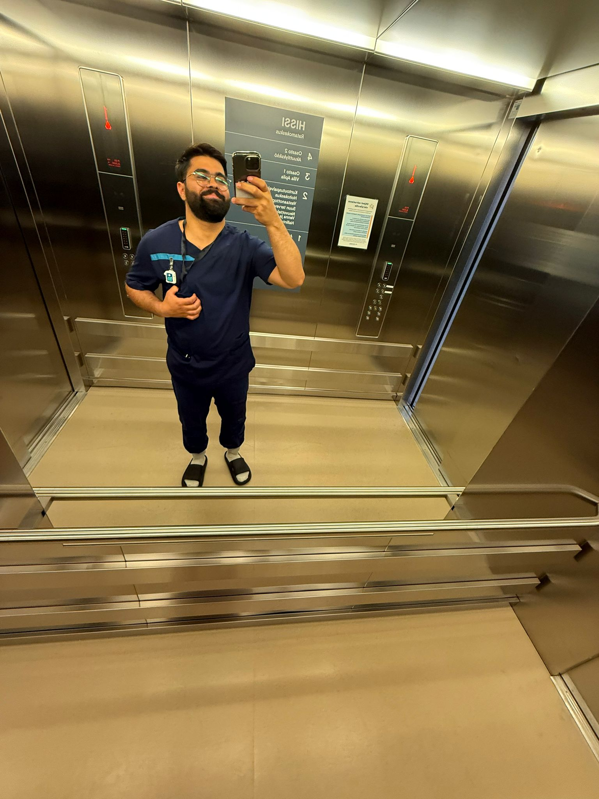
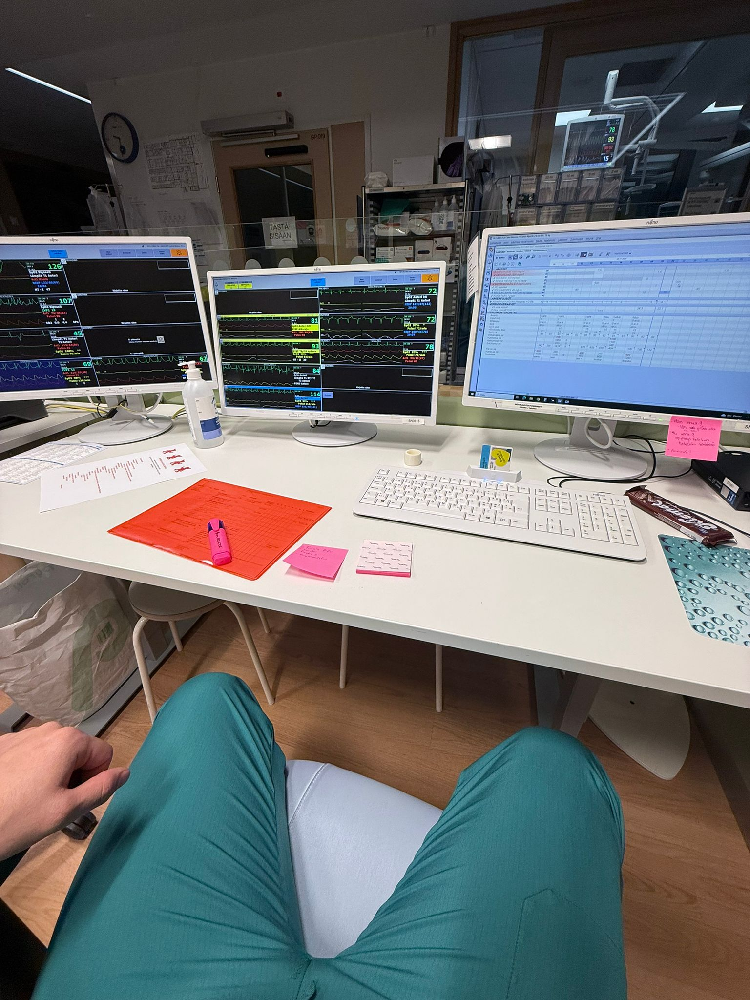
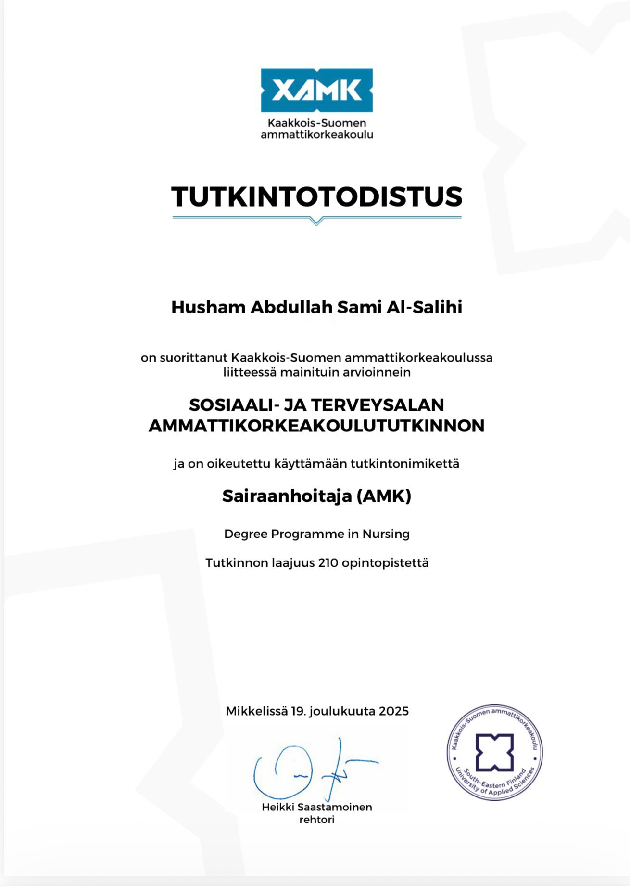

Sairaanhoitaja
Ammattitaitoista ja empaattista hoitotyötä
Intohimoinen ja omistautunut sairaanhoitaja
Olen Husham Al-Salihi, valmistunut sairaanhoitaja (Xamk — Kaakkois-Suomen ammattikorkeakoulu). Minulla on monipuolista kokemusta hoitotyöstä eri ympäristöissä, mukaan lukien vanhustenhoito, mielenterveystyö ja sairaalahoito.
Opinnäytetyöni aiheena oli sairaalainfektioiden torjunta ja ehkäisy, mikä antoi minulle syvällistä asiantuntemusta infektioiden torjunnasta ja hygieniakäytännöistä.
Monipuolista kokemusta hoitotyöstä
Monipuolista sairaalatyötä eri osastoilla. Sisälsi 5 viikon jakson teho-osastolla, jossa hoidin kriittisesti sairaita potilaita.
Kriittisesti sairaiden potilaiden hoito teho-osastolla. Kokemusta elintoimintojen seurannasta, hengityslaitteiden käytöstä ja akuuttien tilanteiden hallinnasta.

Ikääntyneiden hoitotyö hoivakodissa. Päivittäisten toimintojen tukeminen, lääkehoito ja asiakaslähtöinen hoitotyö.
Mielenterveyspotilaiden hoito ja tukeminen. Kokemusta terapeuttisuudesta ja moniammatillisesta yhteistyöstä.
The Effective Nursing Interventions for Controlling and Preventing Health Care-Associated Infections. Tutkimus keskittyi hoitajien infektioiden torjunnan ja ehkäisyn (IPC) käytäntöjen noudattamiseen ja sairaalainfektioiden vähentämiseen.
🎓 Erikoisosaaminen: Infektioiden torjunta
Ammatilliset taidot ja erikoisosaaminen
Monipuolinen kokemus sairaalan eri osastoilta
Kriittisesti sairaiden potilaiden hoitokokemus
Erikoisosaaminen sairaalainfektioiden ehkäisyssä
Ikääntyneiden hoito ja asiakaslähtöinen työ
Terapeuttinen vuorovaikutus ja moniammatillisuus
Turvallinen lääkehoidon toteuttaminen ja seuranta
Ota yhteyttä — soittamalla tai viestillä
Avoin uusille mahdollisuuksille